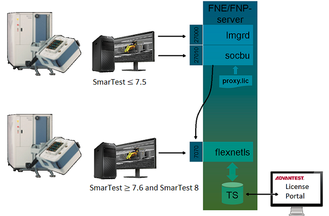

Mixed FlexNet Embedded and FlexNet Publisher licensing
FlexNet Embedded (FNE) and FlexNet Publisher (FNP) license management can be handled from an FNE license server installation, using the FNP to FNE proxy solution, simplifying license management.
Benefits of integrated mixed licensing includes:≥
- Simpler licensing management.
- License re-hosting for SmarTest 5, 6, 7 and 8.
- Automatic annual renewal of perpetual licenses.
To set up mixed licensing:
- FNE server software and the FNP2FNE proxy software (FNX-Server package) are installed on the primary and backup license servers. For details, see Failover license server installation, upgrades and updates or Single License server installation, upgrades and updates.
- Tertiary FNP license servers require the additional installation of the FNP2FNE proxy software.

The license server software is installed using the tool: install-fne-<date>-<version>.sh
| Package | Option | Description |
|---|---|---|
| FNX-Server | fnx | Installs the FNE server and the FNP2FNE Proxy for managing mixed license environments |
| FNE-Server (Native) | server |
Installs the FNE Server and Viewer. The FNE Server Viewer is used to monitoring license servers. In addition, it can be used for:
|
| FNP2FNE-Proxy | proxy | Installs the standalone package for the FNP2FNE Proxy and license client (excludes the FNE-server). |
| FNP2FNE proxy only | tertiary | Installs the FNP2FNE proxy only. Used on the tertiary (FNP) server of a mixed license failover installation. |
| Test License checkout tool | tlc | Installs the test_license_checkout tool. |
| FNE-Client | client | Installs the FNE client package (including the test_license_checkout tool). |
| Reinstall | reinstall | Reinstalls the server package. Use this option to repair a failed or damaged installation. |
| README | readme | Shows the readme file and exits. |
| Test | test | Verifies the download file and reports the MD5 hash value. |
Functional changes
- Introduced in SmarTest 8.3.2